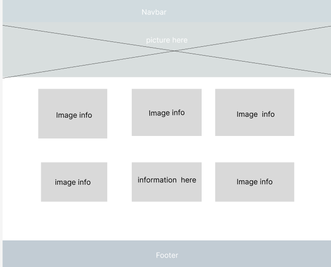

General Design
The content is custom-built with valid, semantic, and contemporary HTML, CSS, and JavaScript technology. The design ensures consistency throughout the site, providing ease of navigation and supporting positive user experiences. Responsive design techniques are employed to deliver content across all devices.
Page Specifications
- Home: The home page will feature attention-grabbing information, community updates, weather updates, calls to action, and spotlights on local businesses.
- Discover: This page will showcase the locale's history, current demographics, and events. An image montage will introduce visitors to notable sites in the area.
- Directory: A listing of local businesses and organizations affiliated with the chamber.
- Join: Information on membership benefits including a form for membership applications. Membership options include non-profit, silver, and gold levels, each offering different perks such as directory listings, publications, trainings, and more.
Developmental Specifications
These specifications align with course objectives:
- The site meets development standards and uses valid, semantic markup.
- Styling is done with valid, standards-based CSS including responsive design using media queries.
- The site meets functional, content, and behavior specifications outlined.
- Design principles ensure a positive user experience with intuitive interfaces.
- The site serves as an applied-learning assessment tool for course outcomes.
File Naming Conventions
All the files and folders referenced in this document follow the naming conventions of the course.
Site Purpose
The site serves multiple purposes:
- To provide information about the community and its businesses.
- To offer resources and benefits to chamber members.
Scenarios
Possible questions users might have when considering using the site:
- What are the benefits of joining the chamber?
- How can I find local businesses and services?
- What events are happening in the community?
Color Schema
The color scheme for the site includes:
- Primary Color: #0056b3 (used for headings and important highlights)
- Secondary Color: #f3f3f3 (used for backgrounds)
- Accent Color: #333 (used for text and details)
Typography
The font family(s) used on the site:
- Primary Font: Arial, sans-serif (used for body text and headings)
- Secondary Font: Georgia, serif (used for emphasis and quotes)
Wireframe
Below are the wireframe sketches for the site layout:
Large Viewport
